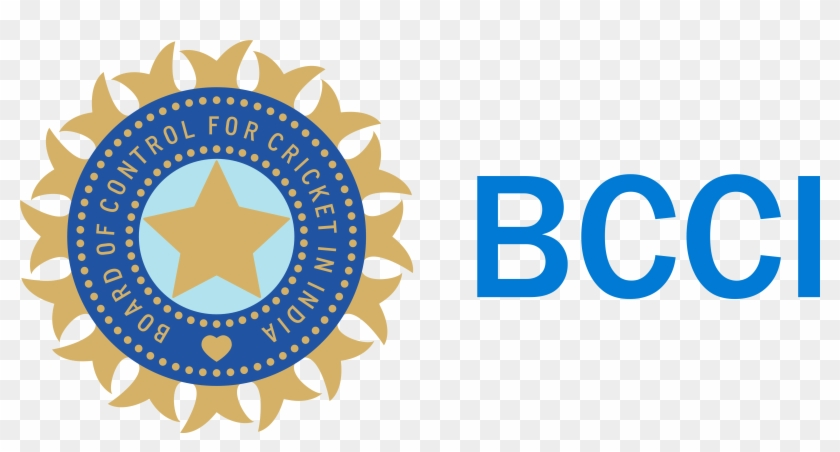
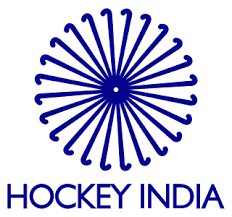

21BCE029
21BCE029
Course and CourseName = 2CS405 & Web technology
My liked Sports Are..
- Cricket
India
- As of January 2023, the team is ranked second in Tests, third in ODIs and first in T20Is by the ICC.
Rohit Sharma is the current captain of the team in all formats; the head coach is Rahul Dravid.The Indian cricket team is one of the most successful
cricket teams in the world, having won 2 ICC World Cups,1 ICC World Twenty20, 2 ICC Champion's Trophies and finished runners up in the inaugural
edition of the ICC World Test Championship. The 2021 ICC Men's T20 World Cup, was initially meant to be hosted by India.

Australia
- The Australia men's national cricket team represents Australia in men's international cricket. As the joint oldest team in Test cricket history,
playing in the first ever Test match in 1877, the team also plays One-Day International (ODI) and Twenty20 International (T20I) cricket, participating in both the first ODI,
against England in the 1970–71 season and the first T20I, against New Zealand in the 2004–05 season, winning both games. The team draws its players from teams playing in the
Australian domestic competitions – the Sheffield Shield, the Australian domestic limited-overs cricket tournament and the Big Bash League.
.jfif)
New zealand
- Cricket is the most popular summer sport in New Zealand, second only in total sporting popularity to rugby.New Zealand
is one of the twelve countries that take part in Test match cricket.In October 2000 they won the Knockout Trophy by defeating India which was their maiden ICC Title. They defeated South Africa to reach
their maiden CWC Final in 2015.
.png)
- Hockey
India
- The India men's national field hockey team represents India in international field hockey competitions, and is governed
by Hockey India. The team was formerly under the control of Indian Hockey Federation. India was the first non-European team to be a part of the International Hockey Federation.
In 1928, the team won its first Olympic gold medal and until 1960, the Indian men's team remained unbeaten in the Olympics, winning six gold medals in a row. The team had a
30–0 winning streak during this time, from their first game in 1928 until the 1960 gold medal final which they lost. India also won the World Cup in 1975. India's hockey team is
the most successful team ever in the Olympics, having won a total of eight gold medals – in 1928, 1932, 1936, 1948, 1952, 1956, 1964 and 1980. India also has the best overall performance
in Olympic history with 83 victories out of the 134 matches played.

Germany
- The Germany men's national field hockey team is one of the most successful sides in the world, winning gold at the Summer Olympics four times (including
once as West Germany), the Hockey World Cup 3 times, the EuroHockey Nations Championship eight times (including twice as West Germany) and the Hockey Champions Trophy nine times (including
three times as West Germany).
.png)
Australia
- The Australia men's national field hockey team (nicknamed the Kookaburras) is one of the nation's most successful top-level sporting teams. They are the
only Australian team in any sport to receive medals at six straight Summer Olympic Games (1992–2012). The Kookaburras placed in the top four in every Olympics between 1980 and 2012; in 2016,
the Kookaburras placed sixth. They also won the Hockey World Cup in 1986, 2010 and 2014.
.png)
- Football
Argentina
- Nicknamed La Albiceleste ('The White and Sky Blue'), they are the reigning world champions, having won the most recent World Cup in 2022. Overall, Argentina
has appeared in a World Cup final six times; a record equalled by Italy and surpassed only by Brazil and Germany; Argentina played in the first ever final in 1930, which they lost 4–2 to Uruguay.
Argentina's next final appearance came 48 years later, in 1978, when the team captained by Daniel Passarella defeated the Netherlands 3–1 in extra time, being crowned world champions for the first
time. Captained by Diego Maradona, Argentina won their second World Cup eight years later, in 1986, with a 3–2 final victory over West Germany. They reached the final once more under the guidance of
Maradona, in 1990, but were ultimately beaten 1–0 by West Germany. A few decades later, Argentina led by Lionel Messi made their fifth final appearance in 2014, losing to Germany 1–0 after extra time.
In 2022, again captained by Messi, they were crowned the World Champions for the third time, the fourth-most of any country, beating France 4–2 on penalties, following a 3–3 draw after extra time,
hence becoming the third most successful team in the history of the FIFA World Cup.
.png)
Brazil
- The Brazil national football team (Portuguese: Seleção Brasileira de Futebol), nicknamed Seleção Canarinho ("Canary Squad", after their bright yellow jersey),
represents Brazil in men's international football and is administered by the Brazilian Football Confederation (CBF), the governing body for football in Brazil. They have been a member of FIFA since
1923 and a member of CONMEBOL since 1916.
.png)
France
- The France national football team (French: Équipe de France de football) represents France in men's international football matches. It is governed by the French
Football Federation (FFF; Fédération française de football), the governing body for football in France. It is a member of UEFA in Europe and FIFA in global competitions. The team's colors and imagery
reference two national symbols: the French red-white-blue tricolour and Gallic rooster (coq gaulois). The team is colloquially known as Les Bleus (The Blues). They play home matches at the Stade de
France in Saint-Denis and train at INF Clairefontaine in Clairefontaine-en-Yvelines.
.jfif)
Reference